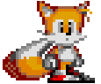

|  | Readme file for the help project |
Hey Januschan. There are some things that you should know about this project, so I decided to make a list of the stuff you should be aware of. Here goes:
The text in the "Can you help?" section is adapted from the original help file. I added some
punctuation marks, made your requests in bold, and I made Necrosaro's explanation of Pointer Calculation in tele-type font,
so it would look cleaner.
Just remember to remove the "I'd like to compile this help file as
HTML Help..." message!
I added myself to the "Acknowledgements" section. I reserved some space for you to add a comment :)
"Byte-code Syntax": The examples are well placed, but I'd reccommend remaking the chart to your own liking.
Some parts of "Thingy tables" were teletyped for easier reading.
All of the charts used in the "Find using table" and "Replace using table" sections were converted to tables for easier reading and placement/editing.
The default_style.css file controls the background, font size/style/color, and some special editing that was used for the tables and the page titles. The body style is as follows:
BODY{
font-family: Arial, Verdana, Helvetica, Helv; //just specify the new font here.
font-size:15px; //change this to your liking.
color:#ffffff; //This is the text's color, set to white.
background-image:url(nestenbg.gif); //Change this to another file to change the background.
// Just be sure to specify the new file and remove the old one in the "Files" section of the project,
// or else it won't compile!
background-color:#000000;} //This is the background color, set to black.
div.italic = This is used in some places to make a bold italic font appear. div.title = This is used in every page. It underlines and boldfaces the titles. td = Sets the default size of the table's TD section, and uses a monospace font. td.top = The title for the charts. It underlines and makes the letters 1 pixel bigger.
I guess that's it. Thank you for letting me be a part of this great project, even if it was in such a small way.
Just one more thing. Your gratitude is pay enough for me... [though some money wouldn't hurt =D] Just kidding about the money bit.
Later!
David "Kitsune Sniper" Silva García
Mexicali, Mexico.